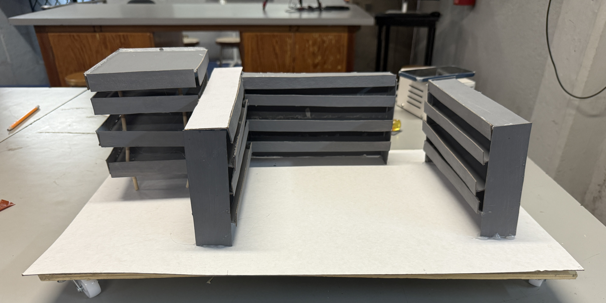

Proceso
Enfoque del Proyecto: El cálculo diferencial es una herramienta matemática fundamental en la sismología y la ingeniería sismorresistente, que son las disciplinas que estudian los terremotos y sus efectos. Su aplicación se da en el análisis y modelado de los fenómenos sísmicos, no tanto en la medición directa.
Resumen: La ecuación fundamental del desplazamiento total de un punto en una estructura durante un terremoto se puede definir como Donde representa el desplazamiento del suelo debido al sismo, y es el desplazamiento relativo entre la masa de la estructura y el suelo. El movimiento de un edificio debido a una fuerza sísmica puede modelarse de forma simplificada como un sistema masa-resorte-amortiguador [1] dado por: Donde: masa del edificio (kg), con un valor 639 ton. es la segunda derivada del desplazamiento, es decir, la aceleración relativa de la masa con respecto al suelo. coeficiente de amortiguamiento (N ⋅m/s), con valor de 2.24 × 10⁶ N ⋅m/s. es la primer derivada del desplazamiento, es decir, la velocidad relativa de la masa con respecto al suelo. coeficiente de rigidez del edificio (N/m), con valor de 1 × 10⁸ N /m. representa la fuerza de inercia debido a la aceleración del terreno, la cuál puede considerarse como un efecto de la fuerza sísmica. Los parámetros del sistema se aproximaron realizando un estudio de los edificios de la universidad de la siguiente manera [2] y [3]: La rigidez de una columna o pórtico simple de un edificio se aproxima como donde es el módulo de elasticidad del material, es el momento de inercia de la sección transversal, y es la altura de la columna. Se utiliza un valor aproximado de 1 × 10⁸ N /m para edificios de concreto. La masa aproximada del edificio es de 638,689 kg. El coeficiente de amortiguamiento crítico se calcula con la fórmula . El coeficiente de amortiguamiento se considero aproximadamente el 7% del amortiguamiento crítico , que es un valor típico para estructuras de concreto reforzado Se utilizó un modelo de sistema de masa-resorte- amortiguador para representar la dinámica de una estructura. El modelo matemático se tradujo a un sistema de ecuaciones diferenciales ordinarias de primer orden. Se empleó la biblioteca scipy.integrate.odeint de Python para resolver numéricamente las ecuaciones diferenciales. Se definieron funciones para simular diferentes tipos de fuerzas aplicadas, como fuerzas sinusoidales amortiguadas y fuerzas de impulso. Los resultados del desplazamiento, la velocidad y la fuerza aplicada se visualizan gráficamente.
Elaboración
Durante esta etapa, construimos una maqueta que simula un terremoto utilizando un motor vibrador y sensores. Los cálculos incluyeron derivadas para modelar el cambio de posición con respecto al tiempo.

Materiales
- Motor vibrador
- Plataforma de madera
- Arduino UNO
- Sensor de movimiento
- Cables, resistencias
- Impresora 3D (estructura)
- Computadora para simulación y animación
Resultado Final
Video de la Maqueta en Funcionamiento
Modelo Matemático Utilizado
Se utilizó la función senoidal f(t) = A·sin(ωt) para simular las ondas sísmicas, donde:
- A: amplitud del movimiento
- ω: frecuencia angular
- t: tiempo
También se analizaron las derivadas para conocer la velocidad y aceleración del sistema.